VRChat Model Example
One of my absolute favorite things to create are playable 3D models to use in VR applications. Every step in the process such as creating the designs, concept art, bare bones structure in Blender, outfits, textures, expressions, rigs, Unity shenanigans, and finally testing it out in VR are all my favorite steps. I first got into model making because I wanted to create modded items for The Sims, and ended up on a journey that lead me to creating my own characters, as well as others' for them on the side for upload into VRChat specifically. The following is a step by step explanation of how I often work on characters.
Concept art first draft
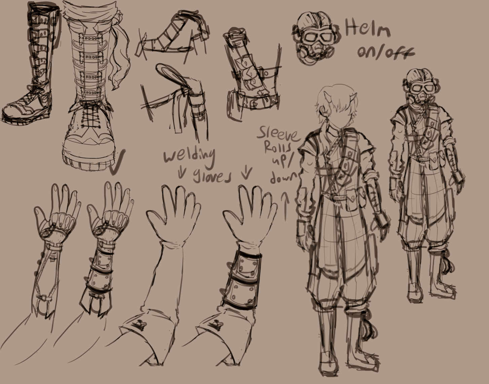
Basic face structure before and after the first draft.
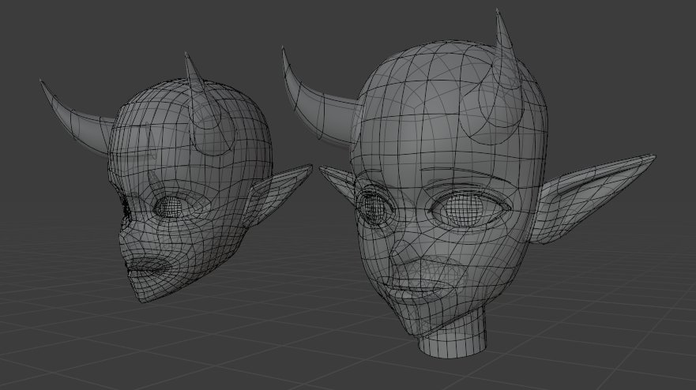
Face textures
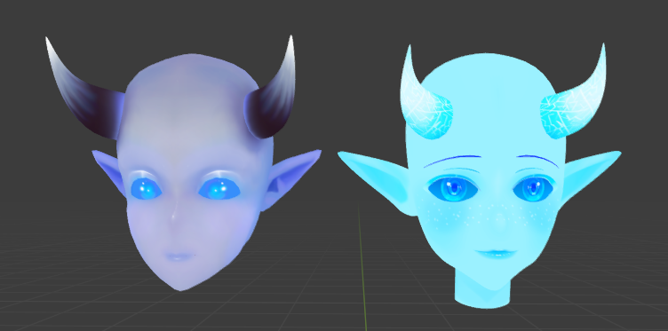
Curve based hair model
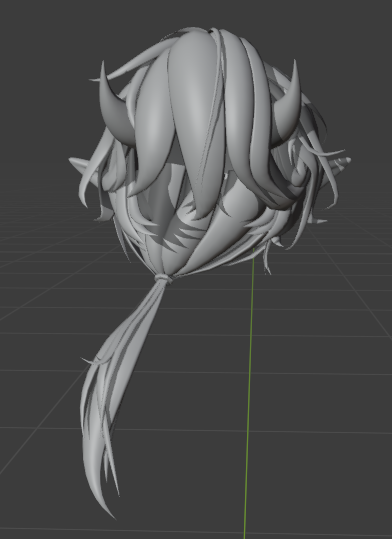
Final face and hair
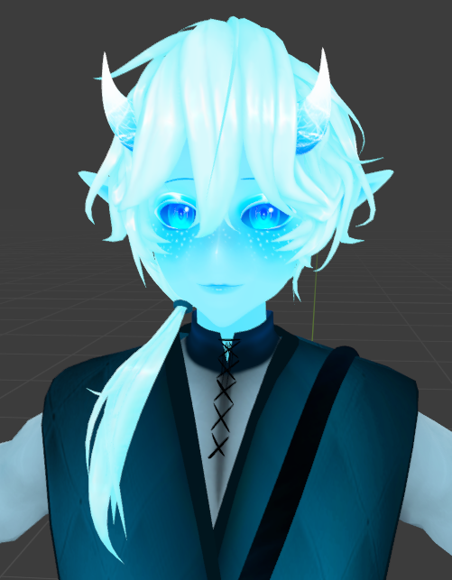
Front view of armature
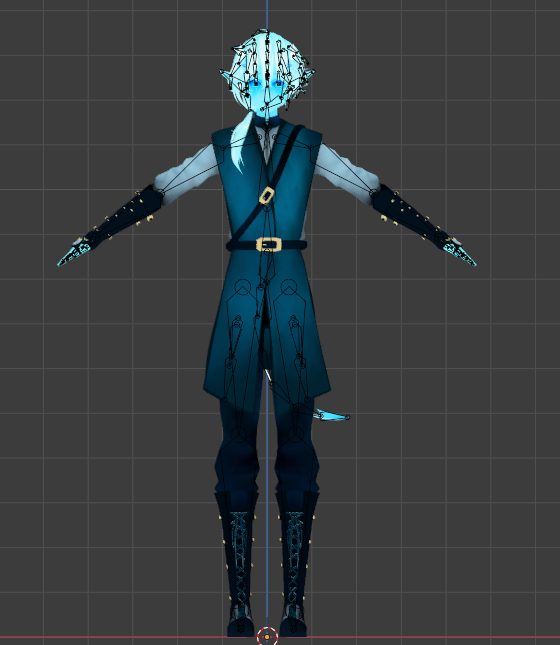
Side view of armature
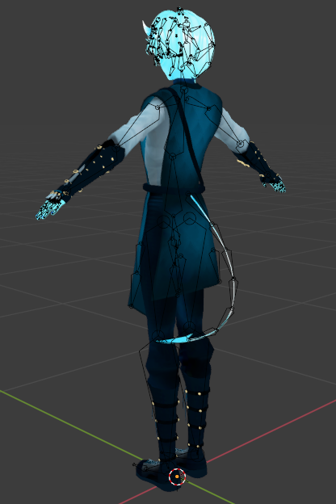
Posing test in Blender
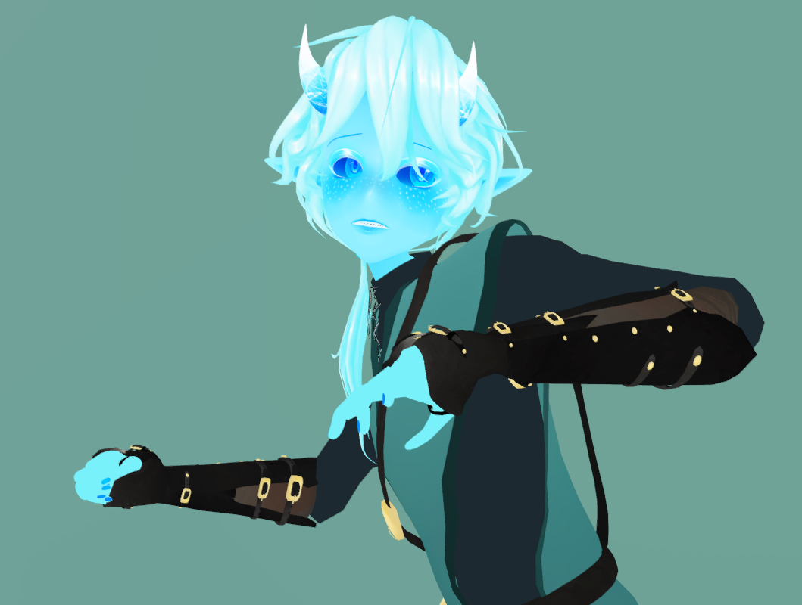
Expressions

The rest of the images are VR tests! Enjoy :)
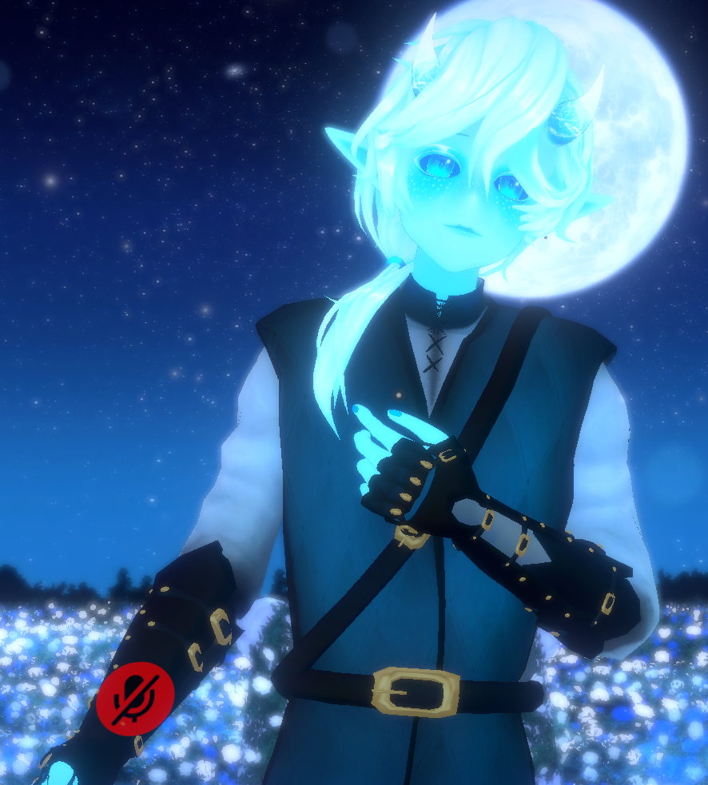
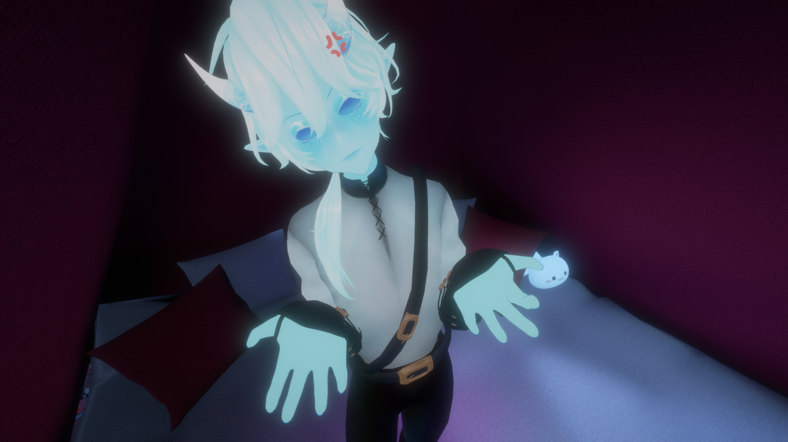
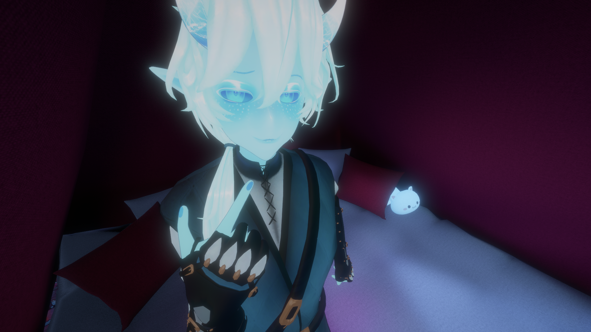
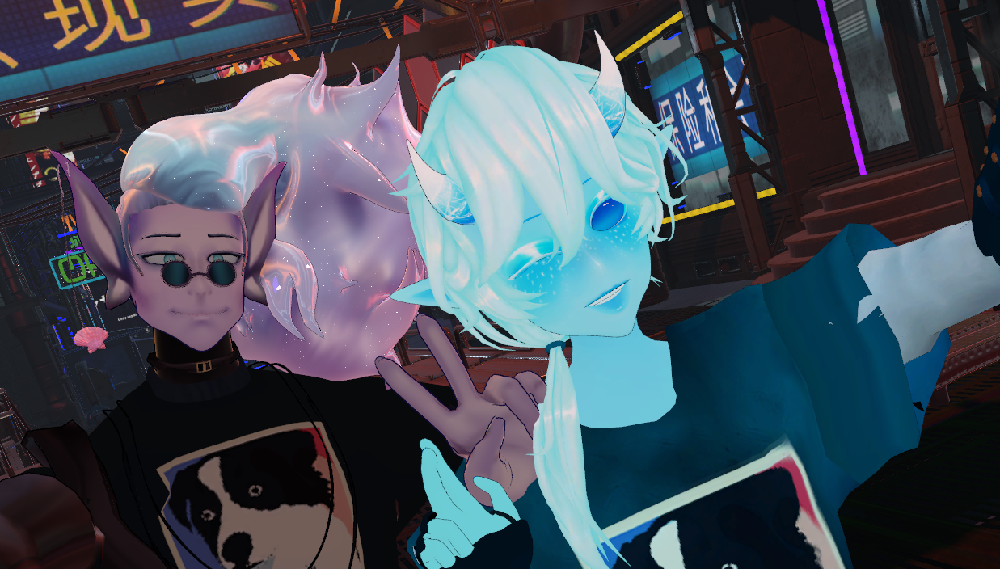